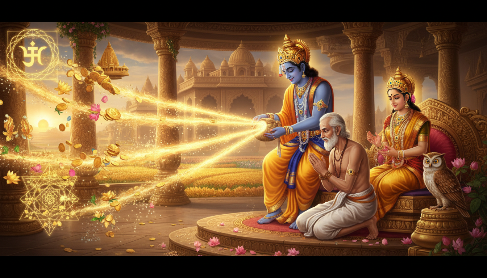

जब धन रुक जाता है, तो मन यह मानने लगता है कि समाधान भी बहुत बड़ा होना चाहिए: बड़ा कर्ज, सही नौकरी, प्रभावशाली संपर्क या अचानक भाग्य। सुदामा की कथा इससे बिल्कुल अलग शुरू होती है। एक गरीब ब्राह्मण फटे कपड़े में बांधी चार मुट्ठी चूड़ा लेकर द्वारका जाता है, और वही व्यक्ति उन महलों में लौटता है जो उसने मांगे नहीं थे।

यह केवल एक चमत्कारिक कहानी नहीं है। यह वैदिक भक्ति का बहुत सटीक उपाय-सूत्र है। यह सिखाता है कि ईमानदारी, मित्रता, विनम्रता, उचित प्रार्थना और पवित्र अर्पण एक साथ कैसे काम करते हैं। वैदिक परंपरा में धन आध्यात्मिकता का शत्रु नहीं है। धन तभी खतरनाक होता है जब धर्म से अलग हो जाए।
जो कोई कंगाली, कर्ज, देरी, मदद मांगने की शर्म या यह डर झेल रहा है कि उसका परिश्रम कहीं दिख नहीं रहा, सुदामा की कथा उसके लिए औषधि है। यह कथा कृष्ण भक्ति, लक्ष्मी-कुबेर, शुक्र-गुरु उपाय, दूसरे और ग्यारहवें भाव, आयुर्वेदिक ओजस, अधिक प्रचलित न होने वाले समृद्धि अनुष्ठान और गूढ़ धन-साधना को एक रज्जु में बांधती है। इसे धीरे पढ़ें, फिर व्यवहार में उतारें।
1. कथा: चार मुट्ठी चूड़ा
सुदामा भगवान कृष्ण के गुरुकुल के मित्र थे। दोनों सांदीपनि मुनि के आश्रम में पढ़े थे। बाद में कृष्ण द्वारका के शासक बने, जबकि सुदामा एक गरीब विद्वान बने रहे। भागवतम उन्हें विद्वान, शांत, विषय-विरक्त और संयमी बताता है, फिर भी उनका गृहस्थ जीवन भरपूर सुख नहीं दे पाता।
उनकी पत्नी पति की भूख नहीं देख पातीं। वे विनम्रता से याद दिलाती हैं कि कृष्ण उनके मित्र हैं और स्वयं लक्ष्मी के पति हैं। वे सुदामा से कपट नहीं करवातीं, बल्कि ईश्वर के दर्शन कर आश्रय प्राप्त करने को कहती हैं।
सुदामा इसलिए राजी होते हैं कि कृष्ण का दर्शन स्वयं सबसे बड़ा लाभ है। फिर भी वे पूछते हैं, "घर में अर्पण के लिए कुछ है तो दे दो।" उनकी पत्नी पड़ोसियों से चार मुट्ठी चूड़ा उधार लाती हैं, पुराने कपड़े में बांधती हैं और पति को देती हैं।
सुदामा महल में पहुंचते हैं। कृष्ण दूर से ही उन्हें देख लेते हैं। वे उठकर आते हैं, आलिंगन करते हैं, उन्हें पलंग पर बिठाते हैं, स्वयं उनके चरण धोते हैं, धूप-दीप से सम्मान करते हैं और गौदान करते हैं। लक्ष्मी स्वरूपा रुक्मिणी स्वयं उस गरीब ब्राह्मण को चंवर से थंडक देती हैं। महल में सब चकित हो जाते हैं। संपत्ति भक्ति की सेवा कर रही है।
तब कृष्ण सुदामा से छिपाए गए उपहार को मांगते हैं। सुदामा को लज्जा आती है, क्योंकि उपहार बहुत छोटा है। कृष्ण वह चूड़ा लेकर प्रेम से खाते हैं और कहते हैं कि प्रेमपूर्वक अर्पित कुछ अन्न उन्हें और समस्त ब्रह्मांड को भी संतुष्ट कर सकता है। रुक्मिणी दूसरी मुट्ठी रोक देती हैं और कहती हैं कि भगवान का एक ग्रहण किया हुआ कण ही इस लोक और परलोक में पर्याप्त समृद्धि के लिए है।
सुदामा बिना धन मांगे लौटते हैं। मार्ग में उन्हें केवल कृष्ण के दर्शन ही पर्याप्त लगते हैं। घर पहुंचकर वे देखते हैं कि झोपड़ी के स्थान पर दिव्य महल खड़े हैं। उनकी पत्नी देवी के समान अलंकृत हैं। बाहरी परिवर्तन पहले ही हो चुका था, किंतु सुदामा का अंतर लोभ में नहीं बदला। वे कृष्ण की कृपा पहचानते हैं और भक्ति में स्थिर रहते हैं।
2. अर्पण ही साधना क्यों है
चूड़ा रिश्वत नहीं है। यह तीन बातों का प्रतीक है:
- स्वीकृति: सुदामा हाथ खाली नहीं जाते। कंगाली में भी वे पवित्र अर्पण लेकर जाते हैं।
- ईमानदारी: वे जो वास्तव में नहीं रखते, उसका दिखावा नहीं करते। वे जो रखते हैं, वही अर्पित करते हैं।
- संबंध: वे कृष्ण के समक्ष भिखारी की तरह नहीं, बल्कि मित्र की तरह खड़े होते हैं।
यही पहला धन-उपाय है। अधिकांश मनुष्य दो विपरीत ग्रंथियों से समृद्धि रोक देते हैं। कुछ लोगों को मदद मांगने में इतनी शर्म आती है कि वे द्वार नहीं खटखटाते। कुछ लोग बिना देने के ही लेना चाहते हैं। सुदामा तीसरा मार्ग दिखाते हैं: अपना सत्य पवित्रता के समक्ष रखो, गरिमा के साथ आश्रय मांगो, और कृपा को उत्तर का रूप चुनने दो।
यह छोटा अर्पण मन को कंगाली की पकड़ से ढीला करता है। यह कहता है, "मेरे पास केवल कमी नहीं है, मेरे पास देने के लिए कुछ भी है।"
3. सुदामा का धन-ज्योतिष
कथा का प्रत्येक अंग ज्योतिषीय सिद्धांत से जोड़ा जा सकता है, बिना अतिशयोक्ति किए।
| कथा का तत्व | ज्योतिषीय भाव | उपाय का सूत्र |
|---|---|---|
| सुदामा का गरीब गृहस्थ जीवन | दूसरा भाव: संचित धन, अन्न, वाणी, कुटुंब सहारा | संचय, वाणी शुद्धि, सम्मान और पोषण पहले सुधारो। |
| कृष्ण की मित्रता | ग्यारहवां भाव: लाभ, संपर्क, बड़ों का मार्गदर्शन, इच्छा-पूर्ति | कंगाली में अकेलापन न पालो। सच्चा और धार्मिक संपर्क रखो। |
| सांदीपनि मुनि का गुरुकुल | नौवां भाव: गुरु, भाग्य, धर्म, दैवी कृपा | गुरु और शिक्षकों का सम्मान रखो। भाग्य अक्सर गुरु-तत्व से प्रवेश करता है। |
| सुदामा की पत्नी | सातवां भाव और चंद्र: साझेदारी, भावनात्मक सहारा, संयुक्त जिम्मेदारी | धन का तनाव उस व्यक्ति को न कड़वा दो जो तुम्हारे साथ खड़ा है। |
| चार मुट्ठी चूड़ा | दूसरा भाव अर्पण, पांचवां बुद्धि, बारहवां दान | मांगने से पहले छोटा, सच्चा और नियमित दान करो। |
| रुक्मिणी की सेवा | शुक्र, लक्ष्मी, सौंदर्य और गरिमापूर्ण ग्रहण | धन तब उत्तर देता है जब भक्ति का अपमान नहीं होता। |
| कृष्ण का मौन उपहार | नौवां भाव की कृपा और आठवें भाव का अदृश्य परिवर्तन | प्रयास द्वार खोलता है, किंतु कृपा दृश्य होने से पहले भी काम करती है। |
वास्तविक धन-योग केवल ग्रह-स्थिति नहीं है। वह एक अनुशासित अवस्था है: बलवान आत्मबल, पवित्र वाणी, उपयोगी कौशल, ईमानदार संपर्क, धार्मिक उद्देश्य और नियंत्रित व्यय। जब ये जुड़ जाते हैं, धन के आने का मार्ग बन जाता है।
4. शुक्र, गुरु और धन-धारा
शुक्र लक्ष्मी-तत्व का कारक है: सुख, सौंदर्य, संबंध, कला और धन का सुरुचिपूर्ण उपभोग। शुक्र दुषित हो तो शर्म, तुलना, भावुक खर्च या धन को अस्वीकार करने वाला दरिद्र-मन दिख सकता है।
गुरु विस्तार, मार्गदर्शन, नीति, शिक्षा और कृपा का कारक है। गुरु दुर्बल हो तो व्यक्ति के पास ज्ञान होकर भी पहचान नहीं बनती, उदारता होकर भी व्यवस्था नहीं रहती, और श्रद्धा होकर भी ठोस कर्म नहीं होता।
चंद्र ग्रहण करने की मानसिक क्षमता रखता है। भयभीत चंद्र मदद ठुकरा सकता है, गरीबी छिपा सकता है, या अवसर आने पर भी कंगाली की आदत दोहरा सकता है।
बुध व्यापार, गणना, संवाद और अनुबंध देखता है। शनि धीरे-धीरे और नियमपूर्वक संचय देता है। राहु उछाल और असामान्य मार्ग देता है, किंतु उसे नीति से बांधना पड़ता है। केतु वैराग्य देता है ताकि धन लत न बने।
धन-विश्लेषण में इन्हें देखो:
- दूसरा भाव और उसका स्वामी: बचत, भोजन, वाणी, कुटुंब संसाधन,
- ग्यारहवां भाव और उसका स्वामी: लाभ, ग्राहक, मित्र, संपर्क,
- नौवां भाव और उसका स्वामी: भाग्य, गुरु, दैवी कृपा,
- पहला भाव और उसका स्वामी: आत्मगौरव और ग्रहण करने की क्षमता,
- पांचवां भाव: बुद्धि, सृजनशीलता और पूर्व पुण्य,
- बारहवां भाव: व्यय, दान और अपव्यय।
लक्ष्मी योग या कुबेर योग जादुई परमिट नहीं है। शास्त्रीय दृष्टि में बलवान नौवां स्वामी, बलवान लग्न स्वामी, या दूसरे-ग्यारहवें भावों पर शुभ संबंध स्थायी समृद्धि का संकेत देते हैं। किंतु योग का फल दशा, गोचर, प्रयास और नैतिक कर्म के बिना पूरा नहीं होता।
5. गोचर ऊर्जा के साथ संरेखण
समय का चयन सहारा है, अंधविश्वास नहीं।
- शुक्रवार: शुक्र और लक्ष्मी के लिए। घर स्वच्छ करो, सफेद फूल, चावल, मिश्री या मिठाई अर्पण करो, शुक्र या लक्ष्मी मंत्र जपो।
- गुरुवार: गुरु और कृपा के लिए। शिक्षक का सम्मान करो, पुस्तक या हल्दी दान करो, एक व्यावहारिक धन-कौशल सीखो।
- शुक्ल पक्ष: वृद्धि के लिए, विशेषकर प्रतिपदा से पूर्णिमा तक।
- पुष्य नक्षत्र: पोषण, स्थिरता और विश्वसनीय मार्गदर्शन के लिए।
- रोहिणी नक्षत्र: कृष्ण भक्ति, सौंदर्य और भावनात्मक समृद्धि के लिए।
- धनतेरस और दीपावली काल: वार्षिक धन-नवीनीकरण, लक्ष्मी-कुबेर पूजन के लिए।
यदि शुक्र या गुरु का गोचर तुम्हारे दूसरे, पांचवें, नौवें या ग्यारहवें भाव से गुजर रहा है, या शुक्र-गुरु की दशा-अंतर्दशा चल रही है, तो यह अभ्यास अधिक प्रतिक्रियाशील अनुभव हो सकता है। किंतु संपूर्ण गोचर की प्रतीक्षा मत करो। सुदामा का आशीर्वाद अपूर्ण भय और अधूरे साहस से ही शुरू हुआ था।
6. दुर्लभ सुदामा चार-मुट्ठी अनुष्ठान
यह सरल अनुष्ठान कथा की चार मुट्ठी चूड़ा पर आधारित है। दरिद्रता, कर्ज, अवरुद्ध आय, मदद मांगने की शर्म या अस्वीकृति के भय में इसे कर सकते हैं।
तैयारी
- स्नान करो और स्वच्छ वस्त्र पहनो।
- घर का ईशान या उत्तर कोण स्वच्छ करो, साथ ही भोजन का स्थान भी साफ करो।
- स्वच्छ वस्त्र पर कृष्ण, लक्ष्मी या कृष्ण-रुक्मिणी की छवि रखो।
- चार छोटे भाग में चूड़ा, चावल या कोई अन्न रखो जिसे बाद में दान किया जा सके।
चार अर्पण
- कृतज्ञता: एक वर्तमान वरदान का नाम लेकर अर्पण करो।
- ईमानदारी: बिना बढ़ा-चढ़ाए एक सच्ची आर्थिक आवश्यकता कहो।
- प्रयास: अगले 24 घंटे में करने वाले एक ठोस कदम का संकल्प लो।
- प्रवाह: अपनी क्षमता के अनुसार दान, सेवा या मार्गदर्शन का वचन दो।
अनंत चावल मंदिर में अर्पण करो, भूखे को भोजन कराओ, फूड बैंक को दान दो, या प्रसाद बनाकर साझा करो। बाहरी दान संभव न हो तो पौधे में जल दो और घर में सेवा करो।
यह अनुष्ठान मन को सिखाता है कि वह केवल रिक्तता नहीं है। कृतज्ञता, सत्य, कर्म और देन चार दिशाएं बनकर समृद्धि की धारा खोलती हैं।
7. कम प्रचलित लक्ष्मी-कुबेर साधनाएं
ये अभ्यास कम लोग विस्तार से बताते हैं। इन्हें श्रद्धा और अनुशासन से करो।
कुबेर उत्तर कोण
कुबेर उत्तर दिशा के रक्षक और देवों के कोषाध्यक्ष माने जाते हैं। घर या कार्यस्थल का उत्तर या ईशान कोण स्वच्छ, हल्का और अव्यवस्था रहित रखो। एक छोटे पीतल, तांबे या मिट्टी के पात्र में कुछ सिक्के, चावल और हल्दी रखकर संचित धन का प्रतीक बना सकते हो। सप्ताह में एक बार उसे साफ करो। यह जादुई बर्तन नहीं, अपनी वर्तमान संपत्ति का सम्मान सिखाने वाला अनुशासन है।
कुबेर-लक्ष्मी जप
शुक्रवार प्रातः या ब्रह्म मुहूर्त में उत्तर दिशा की ओर बैठकर 108 बार कुबेर या अष्टलक्ष्मी मंत्र जपो। पारंपरिक रूप इस प्रकार है:
ॐ ह्रीं श्रीं क्रीं श्रीं कुबेराय अष्ट-लक्ष्मी मम गृहे धनं पुरय पुरय नमः।
अर्थ: कुबेर और अष्टलक्ष्मी को नमस्कार हो; मेरे घर में धन बारंबार परिपूर्ण हो।
यदि किसी परंपरा में दीक्षा प्राप्त नहीं है, तो विश्वसनीय रिकॉर्डिंग सुनो, उच्चारण सीखो, या सरल मंत्र ॐ श्रीं महालक्ष्म्यै नमः जपो। आवाज की मात्रा से अधिक भाव और स्पष्टता महत्वपूर्ण है।
कुबेर मुद्रा
गूढ़ साधनाओं में हाथ को एकाग्रता का उपकरण बनाया जाता है। दोनों हाथों में अंगूठे, तर्जनी और मध्यमा की अग्र बांधो और शेष अंगुलियां मुड़ा लो। मंत्र के बाद कुछ मिनट आराम से हाथ सामने रखो, धीमी श्वास लो, और एक स्पष्ट धार्मिक आर्थिक लक्ष्य का ध्यान करो। यह कर्म का विकल्प नहीं है; यह मन को स्थिर रखने का उपाय है।
श्री सूक्त और श्री चक्र
श्री सूक्त लक्ष्मी का बहुत प्रभावशाली वैदिक आवाहन है। प्रारंभ में घर की सफाई या व्यवस्था के समय इसे सुना जा सकता है। श्री चक्र या लक्ष्मी-कुबेर यंत्र की ओर आकर्षित हो तो योग्य गुरु का मार्गदर्शन लो और यंत्र को संकेत या शॉर्टकट नहीं, पवित्र एकाग्रता मानो।
उल्लू और छिपा संसाधन
लोकप्रचलित चर्चा में लक्ष्मी का उल्लू भूल जाता है। उल्लू रात्रि-दृष्टि का प्रतीक है: जहां अन्य अंधेरा देखते हैं, वहां मूल्य देखने की क्षमता। व्यवहार में इसका अर्थ है कि बाहरी बड़ी मदद की प्रतीक्षा से पहले अपने उपेक्षित कौशल, बिना उपयोग की संपत्ति, बकाया भुगतान, पुरानी सीख या आसपास का शांत सहारा देखो।
8. आयुर्वेद: धन धारण करने वाला शरीर बनाओ
आयुर्वेद समृद्धि और स्वास्थ्य को अलग नहीं रखता। दीर्घ आर्थिक तनाव अग्नि को दूषित करता है और ओजस को हराता है, जिससे धैर्य, प्रतिरोध और स्थिरता घटती है। भय भोजन अनियमित करता है, नींद तोड़ता है और निर्णय जल्दबाज बनाता है।
ग्रहण करने की क्षमता इन सरल आदतों से बढ़ाओ:
- समय पर गर्म, ताजा भोजन करो,
- प्रातः फोन देखने से पहले गर्म जल और गहरी श्वास लो,
- चावल, मूंग दाल, घी, भीगे बादाम, खजूर, मौसमी फल और सौम्य मसालों वाली चूड़ा जैसे सात्विक भोजन लो,
- रात 11 बजे से पहले सोओ और निश्चित समय पर उठो,
- धन-चिंता बढ़ने पर पांच मिनट नाड़ी शोधन या भ्रामरी प्राणायाम करो,
- प्रातः के प्रकाश में टहलो और घर को स्वच्छ, शुष्क एवं सुगंधित रखो,
- अश्वगंधा, शतावरी, ब्राह्मी या बला जैसे औषधीय सहारे योग्य आयुर्वेद चिकित्सक की सलाह के बिना न लो।
चूड़ा हल्की और सामान्यतः सुपाच्य होती है, किंतु यह भक्ति-प्रतीक है, चिकित्सकीय निर्देश नहीं। मधुमेह, अम्लपित्त, गर्भावस्था या किसी अन्य रोग में आहार विशेषज्ञ की सलाह से बदलाव करो।
9. दर्शन: गरिमा से मांगो, लोभ से ग्रहण न करो
सुदामा की महानता उनकी गरीबी नहीं है। उनकी महानता यह है कि गरीबी उनकी गरिमा, विद्या, मित्रता और भक्ति को मिटा नहीं पाती।
यह भ्रम है कि आध्यात्मिक व्यक्ति को सांसारिक सहायता के लिए कभी प्रार्थना नहीं करनी चाहिए। वैदिक परंपरा जीवन के चार पुरुषार्थ मानती है: धर्म, अर्थ, काम और मोक्ष। अर्थ वैध है। वह तभी हानिकारक होता है जब नीति से अर्जित न हो, करुणा से रखा न जाए, या उसकी पूजा की जाए।
कृष्ण का प्रश्न, "तुम मेरे लिए क्या लाए हो?", सुदामा को लज्जित नहीं करता। वह संबंध का नियम दिखाता है। प्रेम से अर्पित लघुतम वस्तु भी स्वीकार होती है। गीता में वही सिद्धांत है: पत्र, पुष्प, फल या जल भक्तिपूर्वक अर्पित हो तो ईश्वर स्वीकार करते हैं।
रुक्मिणी द्वारा दूसरी मुट्ठी रोकना भी गहरा संकेत है। कृपा द्वारा स्वीकृत एक सच्चा अर्पण ही पर्याप्त है। इसका अर्थ यह नहीं कि एक अनुष्ठान करके साधना छोड़ दो। इसका अर्थ है कि अनुष्ठान कोई लेन-देन नहीं है जहां दबाव बढ़ाने से फल बढ़ेगा। शुद्धता वह पूर्ण करती है जो केवल दोहराव नहीं कर सकता।
अंतिम वरदान यह है कि सुदामा धनी बन जाते हैं पर लोभी नहीं। यही वास्तविक धन-विजय है।
10. 41 दिवसीय सुदामा समृद्धि साधना
इसे कठिन आर्थिक काल, शुक्र-गुरु गोचर या उस समय करो जब कंगाली तुम्हें छोटा महसूस कराए। स्वास्थ्य, सुरक्षा और मार्गदर्शन के अनुसार इसे बदलो।
दिन 1 से 7: क्षेत्र शुद्ध करो
- रोज घर का एक भाग स्वच्छ करो, विशेषकर रसोई, प्रवेश द्वार और उत्तर कोण।
- अपनी आय, व्यय, कर्ज और एक सच्ची प्रार्थना लिखो।
- प्रतिदिन थोड़ा चावल या अन्न अर्पण करो।
- ॐ श्रीं महालक्ष्म्यै नमः 27 बार जपो।
- धन के बारे में दोषारोपण के बजाय एक सत्य, कोमल वाक्य बोलो।
दिन 8 से 14: आत्मबल बढ़ाओ
- निश्चित समय पर उठो और प्रातः के प्रकाश में रहो।
- स्क्रीन के बिना एक गर्म भोजन करो।
- पांच मिनट नाड़ी शोधन करो।
- बजट, बिल, मूल्य निर्धारण, बचत या मूल लेखा-जोखा जैसा एक व्यावहारिक कौशल सीखो।
- जिस संबंध में धन ने मौन या कड़वाहट बोया है, उसे एक कदम ठीक करो।
दिन 15 से 21: संपर्क खोलो
- एक शिक्षक, वरिष्ठ या मित्र से ईमानदार मार्गदर्शन मांगो।
- एक स्पष्ट प्रश्न पूछो, बचाव की भीख न मांगो।
- अपने कौशल के अनुसार एक सेवा अर्पण करो।
- भागवतम 10.80-81 सुनो या सुदामा कथा पढ़ो।
- शुक्रवार को भोजन, ज्ञान या समय दान करो।
दिन 22 से 30: लक्ष्मी-कुबेर आवाहन
- सुरक्षित हो तो शुक्रवार घृत दीप जलाओ।
- कुबेर या लक्ष्मी मंत्र 108 बार जपो।
- कुछ मिनट कुबेर मुद्रा का अभ्यास करो।
- उत्तर कोण स्वच्छ रखो और वहां छोटा धन-प्रतीक रखो।
- एक आर्थिक आदत पर विचार करो: आवेगपूर्ण खर्च, टालमटोल, बिल छिपाना या भय से तुलना।
दिन 31 से 40: कृपा को कर्म दो
- प्रतिदिन एक आय-सृजक कार्य पूरा करो।
- अपना बायोडाटा, पोर्टफोलियो, मूल्य या व्यवसाय योजना अद्यतन करो।
- बिना शर्म एक अवसर पर अनुसरण करो।
- जो तुमसे कम साधन रखता है, उसकी एक सहायता करो।
- तीन वाक्य लिखो: मैं क्या दे सकता हूं, मुझे क्या चाहिए, और मैं क्या करूंगा।
दिन 41: पूर्णाहुति
- चार मुट्ठी अन्न अर्पण कर चार संकल्प दोहराओ।
- अपने शब्दों में कृष्ण, लक्ष्मी और कुबेर का धन्यवाद करो।
- अंतिम दान या सेवा करो।
- एक वाक्य लिखो: "मैं भक्ति खोए बिना समृद्धि ग्रहण कर सकता हूं।"
11. निष्कर्ष: महल से पहले धन प्रारंभ होता है
सुदामा का चमत्कार तब शुरू नहीं हुआ जब झोपड़ी महल बन गई। वह तब शुरू हुआ जब एक गरीब व्यक्ति ने चार मुट्ठी चूड़ा अपने मित्र तक ले जाने का साहस किया। वह तब शुरू हुआ जब ईमानदारी शर्म में छिपने के बजाय कृपा की ओर चल पड़ी।
यदि धन अवरुद्ध है, तो केवल अधिक मांगना पर्याप्त नहीं। अपना क्षेत्र शुद्ध करो, शरीर सुदृढ़ करो, संबंधों का सम्मान करो, जो है अर्पण करो, सत्य से प्रार्थना करो और दृढ़ता से कर्म करो। लक्ष्मी सौंदर्य दें, कुबेर संचय रक्षें, गुरु नीति दिखाए, और कृष्ण लघु अर्पण को भी कृपा में बदल दें।
सुदामा ने धन-विजय इसलिए पाई क्योंकि उन्होंने गरीबी को आध्यात्मिक बताकर ठीक नहीं किया, भीख भी नहीं मांगी। उन्होंने सत्य, मित्रता और भक्ति के साथ समृद्धि का स्वागत किया। यही सुदामा धन साधना का मर्म है।